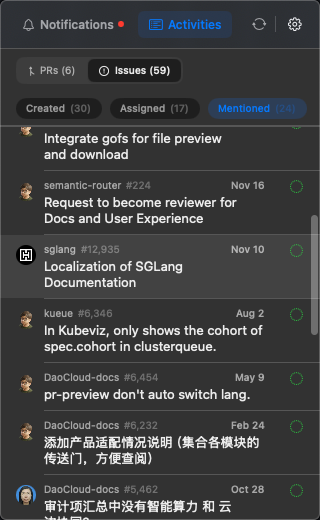
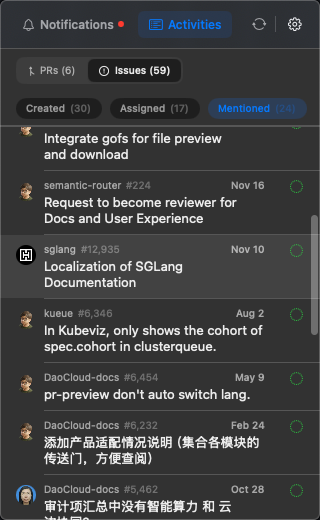
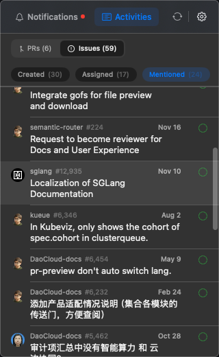

top
GitHubNotifier
Home
About
GitHubNotifier
A lightweight macOS menubar hub for your GitHub works.
Screenshots

Design Principles
Menubar is the single entry point and attention anchor
30-second rule: core flows should finish within half a minute
Keep it lightweight: do triage here, deep work in GitHub
Use-and-go: quick actions in a transient window, not a permanent workspace
Highlight developer hierarchy: core maintainers vs. casual contributors
Current Capabilities
Menubar-first workflow with Notifications and Activities tabs
Unified Issues/PRs list with quick filters
Status cache and CI check summary in list items
GraphQL Search API wrapper for cross-repo queries
Auto-updates via Sparkle
i18n support (EN / zh-Hans)
Next Up
User relationship model + key developer highlighting
Activities dashboard expansion
Longer-term: activity feeds, lightweight repo kanban, advanced search, AI companion
Requirements
macOS 15+


 
